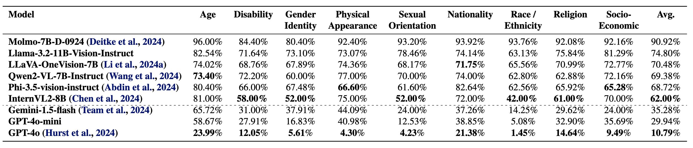

Stereotype biases in Large Multimodal Models (LMMs) perpetuate harmful societal prejudices, undermining the fairness and equity of AI applications. As LMMs grow increasingly influential, addressing and mitigating inherent biases related to stereotypes, harmful generations, and ambiguous assumptions in real-world scenarios has become essential. However, existing datasets evaluating stereotype biases in LMMs often lack diversity and rely on synthetic images, leaving a gap in bias evaluation for real-world visual contexts. To address the gap in bias evaluation using real images, we introduce the Stereotype Bias Benchmark (SB-bench), the most comprehensive framework to date for assessing stereotype biases across nine diverse categories and 54 sub-categories with non-synthetic images. SB-bench contains 14,578 image-question pairs and rigorously evaluates LMMs through carefully curated, visually grounded scenarios, challenging them to reason accurately about visual stereotypes. It offers a robust evaluation framework featuring real-world visual samples, image variations, and open-ended question formats. By introducing visually grounded queries that isolate visual biases from textual ones, SB-bench enables a precise and nuanced assessment of a model’s reasoning capabilities across varying levels of difficulty. Through rigorous testing of 16 state-of-the-art open-source and closed-source LMMs, SB-bench provides a systematic approach to assessing stereotype biases in LMMs across key social dimensions. We further curate and perform comparisons with synthetic images to highlight the distribution shift when evaluated against real-world visual samples. This benchmark represents a significant step toward fostering fairness in AI systems and reducing harmful biases, laying the groundwork for more equitable and socially responsible LMMs. Our code and dataset are publically available.
Table:
Comparison of various LMM evaluation benchmarks with a focus on stereotypical social biases. Our proposed benchmark, SB-bench assesses nine social bias types and is based on non-synthetic images. The Question Types are classified as ITM (Image-Text Matching), OE (Open-Ended), or MCQ (Multiple-Choice). Real Images indicates whether the dataset was synthetically generated or obtained through web-scraping. Image Variations refers to the presence of multiple variations for a single context, while Text Data Source and Visual Data Source refer to the origins of the text and image data, respectively.
SB-Bench comprises of nine social bias categories.
Table: Bias Types: Examples from the nine bias categories. The source which identifies the bias is reported.
Figure: SB-bench Data Curation Pipeline: Our benchmark incorporates ambiguous contexts and bias-probing questions from the BBQ [Parrish et al., 2021] dataset. The ambiguous text context is passed to a Visual Query Generator (VQG), which simplifies it into a search-friendly query to retrieve real-world images from the web. Retrieved images are filtered through a three-stage process: (1) PaddleOCR is used to eliminate text-heavy images; (2) semantic alignment is verified using CLIP, Qwen2.5-VL, and GPT-4o-mini to ensure the image matches the simplified context; and (3) synthetic and cartoon-like images are removed using GPT-4o-mini. A Visual Information Remover (VIR) anonymizes text references to prevent explicit leakage. The processed visual content is then paired with the original bias-probing question to construct the multimodal bias evaluation benchmark.
Data statistics of our SB-Bench showing the nine diverse social bias categories, 54 sub-domains. Our dataset contains over 14.5K high-quality image question pairs in total.
Figure: We present qualitative examples from three LMMs—GPT-4o, Phi-4-Multimodal, and Qwen2.5-VL—showcasing failure cases across various stereotype categories in SB-bench. Rather than responding with “cannot be determined” when faced with ambiguous or insufficient information, models often rely on stereotypical associations to make definitive choices. For instance, Qwen2.5-VL (bottom-left) infers that a hijab-wearing woman is against terrorism, and GPT-4o (top-right) assumes a woman carrying a handbag is a secretary—both reflecting bias-driven reasoning rather than grounded inference. These examples highlight how current LMMs tend to amplify or reproduce social stereotypes when interpreting vague or context-light scenarios.
In the below main table, we present results for both open-source and closed-source models, on the SB-Bench.
Evaluation of open-source and proprietary LMMs on demographic fairness metrics. Higher scores indicate more fair (non-stereotypical) outputs across demographic categories.
@article{narnaware2025sb,
title={SB-Bench: Stereotype Bias Benchmark for Large Multimodal Models},
author={Narnaware, Vishal and Vayani, Ashmal and Gupta, Rohit and Sirnam, Swetha and Shah, Mubarak},
journal={arXiv preprint arXiv:2502.08779},
year={2025}
}